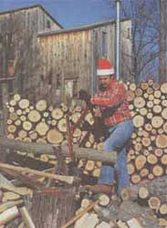
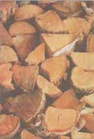
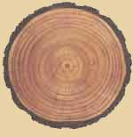
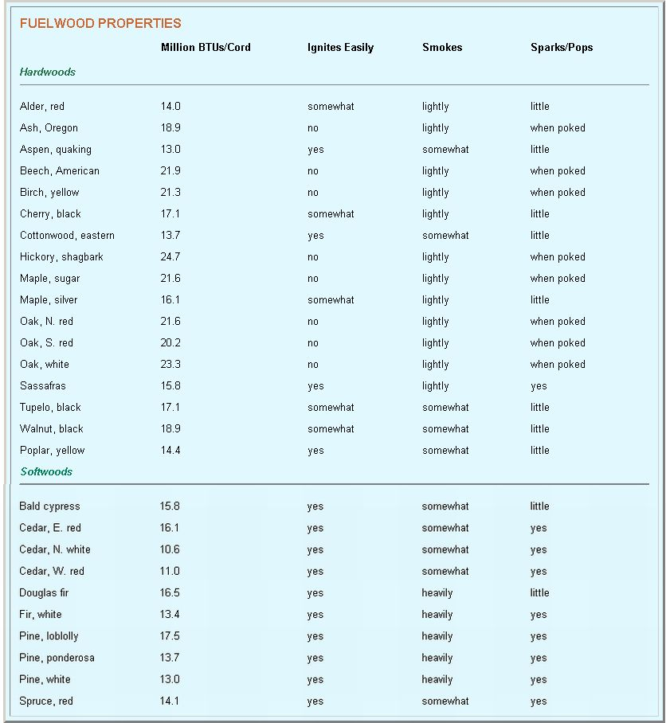

MOTHER'S HEARTH
Whether you want a quick, hot bum or a slow, warm one, here's how to find the right fuel.
For those of us who appreciate a fine fire, selecting fuelwood is as much an art as selecting wine or cheese. Just as you can achieve distinctive effects by combining certain cheeses with just the right wines, so too can you achieve desired effects by judiciously selecting and mixing different species of firewood.
One time you may want to get the chill out with a fire that burns hot and fast, then spends itself quickly so you can go about your business. Another time you may prefer a steady flame that produces glowing coals and long-lasting warmth. For special effects, a log that pops and crackles lends an air of excitement, while one that emits aromatic smoke offers a touch of romance. Here, then, is a connoisseur's guide to fine fuelwood.
Heat Value
Pound for pound, every species of wood produces the same amount of heat and each consists of woody fiber, water, resin, and ash. But the proportions of these four elements vary from one species to another. As a result, some woods weigh more per unit volume - in other words, they're denser - than others. The denser the wood, the more concentrated its fuel value.
Hickory, for example, has an average density of 0.72 grams per cubic centimeter, while pine has half the density at 0.36. Hickory therefore yields twice as much heat as pine. Since density changes as wood dries and shrinks, density measurements are taken after the wood has dried to a specific water content, usually ranging from 12 to 20%.
In forestry, all deciduous trees are classified as hardwoods and all conifers are classified as softwoods. Hardwoods are usually denser. Exceptions include aspen, basswood, cottonwood, and poplar - all hardwoods that are less dense than some of the softwoods. In our part of the country, they're called "soft hardwoods." Since they have less heat content than denser hardwoods, they're not particularly popular as fuelwood. On the other hand, some softwoods (including Douglas fir, loblolly pine, and red cedar) are denser than the lower-end hardwoods, so their heat-producing potential is greater.
The most common way to measure the heating potential of fuelwood is not by density but by the number of units of heat (called British thermal units, or BTUs) emitted. One BTU is the amount of heat needed to raise the temperature of 1 lb of water 1°F. Dense hardwoods (beech, hickory, oak, and some maples) produce in the neighborhood of 21 to 25 million BTUs per cord. Soft hardwoods and the harder softwoods yield some 30% less heat. The remainder of the softwoods give off about half as much heat.
Cold winter days call for a fire built from a long-burning, dense hardwood. Of all the hardwoods, oak burns with the most uniform flame and, like other hardwoods, produces steady, glowing coals that continue yielding warmth long after the flames die down.
By contrast, softwoods and soft hardwoods burn hot and fast. A fire made from these fuels isn't suitable for producing all-day warmth because it needs replenishing more often than most of us have time for. But it's just what's needed to banish the morning chill on days when the sun soon takes over as the main heat producer. Softwood's also great for warming up the place before going to bed because it doesn't produce long-lasting, unpredictable coals and so will be more easily and assuredly extinquished.
The same properties causing softer woods to produce hot, fast fires also make them great kindling. Softwoods are resinous and ignite more easily at lower temperatures than hardwoods. They also tend to be easier to split into kindling pieces.
The most difficult woods to split are black gum, elm, and sycamore, which is why you'll rarely see any of them used as kindling. The denser hardwoods, especially those with twisted grain or lots of knots, can also be difficult to split. Regardless of its density or species, green wood is easier to split than seasoned wood.
For most of us, figuring out how much fuelwood to stockpile for the winter is pretty much a hit or miss proposition. One year we get too much, the next year not enough. If you're among those who like to go about things a bit more scientifically, this formula will help you determine how much wood you'll need to get through a typical winter in your area:
(sq ft. of area to be heated) x (Btus needed/sq ft) x degree days
BTUs per Cord
To heat each square foot of well-insulated living space, you'll need 28 BTUs. If your house is poorly insulated, figure about 45 BTU/sq ft.
Degree days represent how much the mean outdoor temperature varies from 65°F during the heating period. For example, a day with an average temperature of 25°F has 40 degree days (65 minus 25). Ask a local distributor of gas, oil, or electricity if you're not sure.
Let's say the space you want to heat is 15 x 30 ft (450 sq ft) and is well insulated (28 BTUs needed per sq ft). The local gas guy tells you that your area has 4,000 degree days and you're lucky enough to have a good source for white oak, which will give you 23,300,000 BTUs per cord:
450 x 28 x 4,000 = 2.12 cords at 23,300,000 BTUs per cord
Theoretically, you'll need about 1 3/4 cords to get through a typical winter. I say theoretically because the actual number of BTUs produced by the wood you use will depend on how dry the wood is, how resinous it is, and the volume of solid wood per cord (in other words, how tightly it's stacked). Any chart listing BTUs per cord lists only averages determined under ideal conditions. Still, such a chart gives you a good starting place for your calculations. You should be able to get a comprehensive chart listing the BTU values of most firewood species from your nearest forestry or extension office.
Efficiency
Because not all of the heat produced by burning wood is recovered, to convert your theoretical number into a more accurate measure, factor in the efficiency of your heating appliance. If you heat with a modern wood stove (or a fireplace with a catalytic combustor) that recovers 70% of the heat, divide 1.73 by 0.7 and you find that 2 1/2 cords should get you through the winter. If you use an older wood stove with a heating efficiency of 50%, you'll need closer to 3 1/2 cords (1.73/0.5). And if you rely on a fireplace that sends 90% of its heat up the chimney, you had better stockpile a whopping 17 cords.
You can save some of that wood for next winter by closing the damper after a fire dies down and by improving the fireplace's heating efficiency with commercial glass doors.
Whether you use an old or new stove or fireplace, you'll surely be inspired to improve its efficiency when you discover that every time you cart in a cord of seasoned hardwood, you tote 2 tons of fuel.
Seasoning
Seasoning firewood merely means getting the water out. A quarter to half of the weight of freshly cut (green) firewood is water. Green wood is hard to light, burns poorly, and tends to smoke and hiss when it does burn. The white smoke produced is largely steam and the hissing sound indicates that much of the fire's heat is being used to produce the steam. For each pound of water evaporated from green wood you lose 1,050 BTUs.
Whether you buy your fuelwood or cut your own, expect to season it yourself. You'll need two things: sun and air. Fortunately, both are free. The sun's heat provides the BTUs needed to evaporate the moisture and moving air carries the moisture away. All you have to do is stack the wood and leave it in the sun and wind to dry.
Stacking wood off the ground on a rack or platform improves air circulation, retards moisture absorption from the soil, and keeps the bottom row of wood from rotting. Ideal for this purpose are disposable pallets picked up from a farm store or building supplier. If you can't get pallets, stack the wood on a parallel row of straight limbs that are smaller in diameter.
To shed rain, stack pieces with the bark side up and cover the top of the stack but not the sides. You want to keep rain from falling directly on the wood, but you don't want to prevent evaporating moisture from readily escaping. We top our wood with sheets of metal roofing weighed down with a few heavy sticks of wood to keep the sheets from blowing away.
Since drying can take anywhere from 6 to 18 months, it's best to lay in your firewood supply no later than spring for the following winter. Exact drying time depends on a number of variables, including the type of wood you have and how small it's been cut and split. Drying occurs from the outside inward, which is why split wood seasons faster than unsplit wood.
Hardwood, because it's denser, takes longer to dry than softwood. Wood from dead or dying trees contains less moisture to begin with so it seasons faster than wood cut from live trees. And any wood dries more slowly in cool weather and in humid climates.
You can speed up seasoning considerably by cutting the wood into shorter lengths and splitting it into smaller pieces. Stacking the wood in a wind tunnel or a solar dryer also speeds things up. A wind tunnel is any structure that generates a breeze or draft. We once had the perfect wood-drying place in the form of an open-ended shed on one side of our barn. The wind whistled through the shed and dried green wood in no time while the shed's roof kept off rain. A solar dryer speeds things up by concentrating the sun's warmth. Fashion one by covering stacked wood with a sheet of plastic propped away from the wood so that air can readily circulate and moisture will evaporate instead of condensing on the plastic and dripping back onto the wood.
Because it contains less moisture, seasoned firewood is lighter than green wood. As it dries, the wood takes on a weathered look and the ends tend to crack. When you strike two sticks of well-seasoned wood together, they "thwack" like a baseball bat hitting home. Strike two sticks of green wood and all you'll hear is a "thud." Compared to green wood (averaging about 4,000 BTUs per pound), wood that's been air dried to 25% moisture averages 6,400 BTUs. Properly seasoned wood ignites easily and burns at a higher temperature, so it burns cleanly.
Creosote
Burned in the presence of plenty of oxygen, dry wood produces only carbon dioxide, water, and a little ash - three materials that are readily recycled by growing plants. Green or highly resinous wood, by contrast, produces a mixture of wood tars and other wood extracts, collectively known as "creosote." These unburned, organic compounds are carried by smoke up the chimney and are deposited on the flue wall.
When hot, creosote is a viscous liquid. When it cools, it becomes sticky and tarlike. Eventually it dries into black flakes that peel off the chimney wall and fall down the flue. A serious creosote buildup blocks the flue's airflow, making the stove or fireplace hard to light and causing it to smoke when you finally do get it lit. Worse, creosote can be touched off by sparks, igniting a chimney fire.
A wood fire that burns hot and fast keeps the chimney too hot for creosote to stick. Instead, liquid creosote drips down the chimney and into the stove where it gets burned up. Because green wood can't burn hot, it's more likely to cause creosote buildup than seasoned wood is. And since softwood burns hotter than hardwood, softwood is less likely to cause a creosote problem than hardwood.
Creosote buildup is affected not just by the wood you burn, but by your stove's efficiency. Ironically, the less efficient your stove is, the less likely you are to have a creosote problem. This is because an old, drafty stove burns wood faster and hotter than a tight, modern stove. By the same token, you'll get more creosote if you close down the draft regulator and let a fire smolder before the wood has burned down to coals - another good reason to take the chill out with a small, quick, hot softwood fire rather than a longer, slower burning hardwood fire.
Special Effects
While a chimney fire is pretty spectacular, it's not exactly the sort of special effect you would welcome. Popping and throwing sparks, on the other hand, is a characteristic that can be enjoyable - in moderation. The denser hardwoods tend to crackle only when you poke the fire. Some of the softwoods, by contrast, keep up a running commentary that can get downright annoying.
The most vociferous softwoods - cedar, hemlock, juniper, larch, southern pine, spruce, and tamarack - contain fluid resin trapped in pockets. As the wood burns, its resin evaporates into gases and water vapor that build up pressure until the pocket explodes. Although seasoning minimizes popping by reducing moisture, for safety reasons these resinous woods are best reserved for the wood stove. In a fireplace, burn them only with caution.
One special effect that nearly everyone enjoys is the splendid aroma produced by some species of wood. My own favorite winter smell comes from the cedar kindling that we use to light our wood stove on cold mornings. Other wonderfully aromatic woods are hickory, pine, and logs cut from nut and fruit trees, particularly apple. The smoke produced by fruit wood vaguely resembles the fragrance of the tree's fruit.
While many people enjoy the smell of wood smoke, most would agree that a little smoke is usually more than enough. The smokiest woods are the denser softwoods - Douglas fir, southern pine, larch, and tamarack. Dense hardwoods are the least smoky. All others fall somewhere in between.
Fuelwood Sources
The best way to make sure you get a good variety of firewood is to cut it yourself. If you own a woodlot, you are likely to have plenty of trees that are unusable for other purposes because they are poorly shaped, diseased, or of an undesirable species that takes up space needed for the growth of more valuable trees. While you solve two problems at once by cutting down undesirable trees for fuelwood, avoid the ones that have begun to rot. Not only have they lost much of their heat content, but they are likely to contain bugs that you don't want in your house.
If you don't own a woodlot, scurry down to the local landfill after a storm and get permission to cut up logs, limbs, and treetops downed by the storm. Or call the local power company, as it is likely to accumulate logs, limbs, and tops while maintaining power line rights of way. In some areas, firewood is made readily available on public lands. Check with your nearest forest service district ranger or county extension agent.
Another option is to get permission to harvest leftover treetops in freshly logged areas. In the days when my husband and I cut firewood for income, we made our best money when a local logger let us harvest firewood from the slash he left behind. And don't overlook dead or spent orchard trees as a good source of fuelwood. In areas that have restrictions against burning, commercial orchards welcome any offer to cart away spent trees.
The nice thing about cutting your own is that you learn to recognize fuelwood by the kind of tree it comes from, making it easy to load your stove according to the type of fire you want to produce. But even if you take the short cut and purchase your wood already split, you'll build better fires if you take time to acquaint yourself with the properties of the wood you use for fuel.
Measuring Fuelwood
In most parts of the country, wood is measured by the cord. In our area, it comes by the rick. What's the difference?
A cord of wood is defined as the volume of wood that could be stacked 8 ft long x 4 ft high x 4 ft deep (128 cu ft). Of this, only about 80 cu ft is solid wood. The rest is bark and air.
If you buy your firewood by the cord, it is not necessary to take the trouble stacking it to those exact dimensions in order to be sure that you're getting the full measure. Instead, stack it any way that's convenient for you, then multiply the length of the stack times the height times the depth (measured in feet). Then divide by 128. If the result is less or more than 1, you received less or more than the full cord that you paid for.
A rick is the volume of wood that could be stacked 8 ft long x 4 ft high x the depth of the pieces being stacked. A rick is sometimes called a tier or a face cord; this makes sense because it has no specific depth. The surface area of the face of a rick should be 32 sq ft. To determine if you have a full rick, multiply the length of the stack times its height (measured in feet) and divide by 32. If the result is less or more than 1, you have less or more than a rick.
Because a rick lacks specific depth, it has no specific volume. It therefore can't be rigidly defined in terms of a cord, which sometimes leads to confusion. Most of our firewood customers wanted 18-in. wood, so most of the ricks we sold were 3/8 of a cord. A few of our customers ordered cookstove wood cut to 16 in., so their ricks were 1/3 of a cord. For fireplaces, we sometimes cut 24-in. lengths, so a rick of fireplace logs equals 1/2 a cord. If some Goliath with an outsized stove wanted fuelwood in 4-ft lengths, a rick would equal a cord.
In our area, firewood for sale is "ricked up" so customers can see that they're getting fall measure. We used to set up a series of metal fence posts 8 ft apart and stack the wood between them to a height of 4 ft. When we delivered wood in our old Dodge pickup bed, measuring was easy. By neatly loading the wood in parallel rows - stacked level with the top of the bed, then heaped slightly at the middle to make up for the space used by the wheel wells - we had exactly one rick of 18-in. sticks. You can determine the holding capacity of your own vehicle by ricking up a split of firewood, then loading it on and remembering how it falls.
Whether ricked up or stacked by the cord, firewood is more often sold by volume than by weight. If two ricks or cords cost the same amount but one contains denser wood than the other, it is dearly the better buy. If you live in one of the rare areas where fuelwood is sold by weight, make sure you examine it carefully and buy the driest wood possible so you won't be paying extra for water.
|
|
|
 |
|
 |
 |
 |